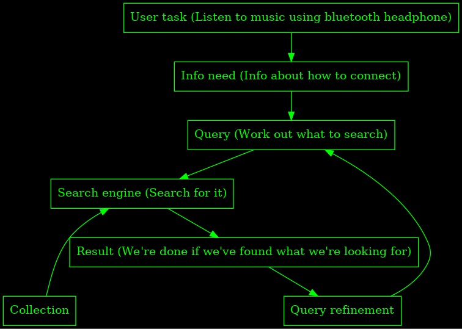

COMP4650
Table of Contents
- 1. Lecture 1 (Introduction)
- 1.1. History of writing
- 1.2. How to automatically process such huge amounts of data
- 1.3. Topic 1: Information retrieval
- 1.4. Topic 2: Machine learning
- 1.5. Topic 3: Social media analysis
- 1.6. Topic 4: NLP
- 1.7. Topic 5: Information extraction
- 1.8. What other applications
- 1.9. Course logistics
- 1.10. Textbook
- 1.11. Lectures
- 1.12. Labs
- 1.13. Course material and communications
- 1.14. Assessment
- 2. Lecture 2 (Information Retrieval)
1 Lecture 1 (Introduction)
1.1 History of writing
First example- Jiahu 6000BCE
A huge spike in the number of books Europe after the invention of the printing press
Google estimates that there about 130 million books in 2010
About 14.3 trillion web pages, 48 billion of which are indexed by Google
143199 tweets a second in 2013 in Japan
1.2 How to automatically process such huge amounts of data
Take this class
1.3 Topic 1: Information retrieval
1.3.1 Boolean retrieval
Are words present?
Not good enough
1.4 Topic 2: Machine learning
Naive Bayes
Textual classification using Vector Space Model
1.5 Topic 3: Social media analysis
Computation social media and networks
Computing network metrics and community detection
Link prediction and visualisation
Sentiment analysis
1.6 Topic 4: NLP
Preprocessing
Language modelling
Vector semantics
Syntax and parsing
Compositional semantics and NLP in practice
1.7 Topic 5: Information extraction
Introduction to IE
HMM (Hidden Markov models) and CRF
Automatic summarisation
IE in practice
1.8 What other applications
Plenty - Question answering, information synthesis, trend analysis, machine translation, sentiment analysis…
Answer a business intelligence question (e.g "Why aren't people buying my product")
1.9 Course logistics
Read the course outline
4 lecturers, questions about admin go to Marian-Andrei Rizolu or Lexing Xie (course convener)
Ask questions on Wattle unless it's a private matter
1.10 Textbook
First and third available online
Introduction to information retrieval
Speech and Language Processing: An introduction to natural language processing, computational linguistics and speech recognition (Find the draft of the third edition online)
Networks, Crowds and Markets: Reasoning about a highly connected world
1.11 Lectures
Mon 2pm-3pm and Tue 12pm-1pm
1.12 Labs
There are 10 labs starting week 2
1.12.1 TODO sign up [100%]
[X]Enroll in a lab tomorrow
1.13 Course material and communications
Everything on Wattle
1.14 Assessment
5 Assignments (one per topic)
In python (yay?) Nope, it's 2
Final exam worth 50%
Two weeks to finish assignment (except NLP)
Written questions are submitted to Wattle
2 Lecture 2 (Information Retrieval)
2.1 Structure
3 sections to this part of the course
Assignment will be announced next week ElasticSearch
Highly related to next week's lab.
Find the textbook at http://nlp.stanford.edu/IR-book/
2.2 What is Information Retrieval?
Comes from library system (since that required an efficient way to quickly find a book)
Index card system replaced by a computerised version of it.
Information Retrieval (IR) is a finding material (usually documents) of an unstructured nature (usually text) that satisfies an information need from within large collections (usually stored on computers)
Not needed for structured data sets (e.g relational databases)
Not just web search
- E-mail search
- Local file search
- Corporate knowledge bases
- Image and video search
What we have: A set of documents (treat it as static for now)
What we want to do: Retrieve information from it
Classic Search Model
2.2.1 DONE make this in dot
- User task (Listen to music using bluetooth headphone)
- Info need (Info about how to connect)
- Query (Work out what to search)
- Search engine (Search for it)
- Result (We're done if it's what we want)
- Query refinement (from 5 and to 3)
Collection (into 4)

Every good IR system needs to achieve
- Effectiveness (Google has more than 130 trillion pages)
- Accuracy (Top 10 pages from 130 trillion pages?)
2.3 Search Shakespeare
We want to find all the plays which contains Brutus and Caesar but not Calpurnia
We could grep through, but
- it's slow
- not Calpurnia is non-trivial
- hard to extend
- we can't rank the answer
2.4 Term Document Matrix
| Antony and Cleopatra | Julius Caesar | The Tempest | Hamlet | Othello | Macbeth | |
| Antony | 1 | 1 | 0 | 0 | 0 | 1 |
| Brutus | 1 | 1 | 0 | 1 | 0 | 0 |
| Caesar | 1 | 1 | 0 | 1 | 1 | 1 |
| Calpurnia | 0 | 1 | 0 | 0 | 0 | 0 |
| mercy | 1 | 0 | 1 | 1 | 1 | 1 |
| worser | 1 | 0 | 1 | 1 | 1 | 0 |
Each column is a document and each row is term
Efficiency?
Consider 1 million document at about a thousand words long. That'd be about 6GB of data and about half a million distinct terms. The table would be much too big
2.5 Inverted index structure
Fundamental in modern information retrieval
It consists of two parts, dictionary and postings.
The dictionary maps from term to (dynamically sized) posting array
This is really just a sparse matrix of the above, except we use a dictionary for the rows. The postings need to be ordered for efficient operations on them
2.5.1 Construction
2.5.2 Boolean retrieval with inverted index
- Intersection
until either is empty, compare the first elements of each posting if they're equal, add it to the result, otherwise move to the next element of the one which was smaller
- Union
until they're both empty, compare the first elements, if they're equal add that
docIDand progress both postings, otherwise add the smallerdocIDand progress that posting
2.5.3 Summary
Can answer any query which is a Boolean expression.
Precise: each document matches, or not
Extended Boolean allows more complex queries
Tried and tested - it's been around for 30 years
2.6 A step back
So far we assume that we can easily scan terms from a document, but really we need to do tokenisation, normalisation, stopwords, stemming and lemmatisation
2.6.1 Tokenisation
Task of chopping documents into tokens.
Chopping by white space and throwing punctuation are not enough
It won't work well for numbers or hyphenation, plus you want to rejoin some compound words
Make sure to tokenise both the query and documents by the same method
2.6.2 Stopword removal
Stopword removal (remove highly occurring words that convey little to no information)
Reduce size of posting list
They're not useful
2.6.3 Normalisation
Keep equivalence classes (e.g U.S.A = USA = United States)
Synonym list, e.g car = automobile
Capitalisation and case folding
Proper nouns are important
2.6.4 Stemming
Replace words with stems
2.6.5 Lemmatisation
Lemmatisation turns words into lemmas, which are dictionary entries (e.g better has good as a lemma)